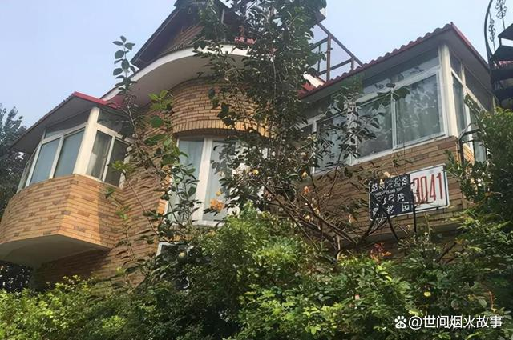

37岁软件公司老板被白富美老婆榨干千万资产离世：我被前妻逼死了
2022-09-28 19:38河北
2017年，37岁的软件公司老板苏享茂因为不堪忍受前妻的敲诈和恐吓，从酒店15楼纵身一跃，结束了生命。
苏享茂的父母听说儿子跳楼身亡，哭得不省人事。老人怎么也想不到，一向乖巧漂亮的儿媳竟然把儿子逼上了绝路。
1980年，苏享茂出生在福建一个农村家庭，他从小善良懂事，聪明好学，高中毕业后以优异的成绩考入北京某高校。
毕业后，苏享茂在互联网公司积累了丰富的实践经验。几年后，他果断辞职创业，开办了自己的软件公司。
苏享茂一心扑在事业上，凭着聪明才智，开发了某网络电话，身家很快达到上千万元。
事业成功后，他为父母在老家县城买了房子，每月给父母20万元生活费。他深知教育对一个人的重要性，就对哥哥姐姐说：“多读书才能改变命运，孩子们的教育费用不用担心，我全包了。”从此，他担负起苏家下一代孩子的教育费用。
父母为苏享茂的成功感到骄傲，也为他的孝顺感到欣慰，同时，二老也为苏享茂的婚事发愁，马上就奔四的年纪了，他却连个女朋友也没有。
苏享茂也想，这些年光顾着忙事业，耽误了婚姻。
然而，研发软件的精英男，说起找对象，却心里发怵。苏享茂外貌普通，个子不高，又不懂怎样追求女人。It业的女孩本来就少得可怜，他的交际范围又窄，去哪里才能找到满意的女朋友呢？
这时，有同事建议他可以去相亲网站试试，网站上资源很多，说不定会遇到有缘人。
于是，苏享茂打开相亲网站，注册了会员，交了几万元会员费，开启了相亲模式。
几天后，网站就给他推送了一名优秀的女硕士。网上信息显示：翟欣欣，1986年出生，身高一米七零，硕士，父母是高校教授。照片上的女孩清纯漂亮，一看就是校花级别的女生。
2017年3月30日，在网站的安排下，苏享茂和翟欣欣在线下见了面。翟欣欣本人比照片上更漂亮，身材高挑，举止优雅迷人。
看到女孩条件这么好，苏享茂打起了退堂鼓。他虽然是理科学霸，It精英，但他对自己的外貌很有自知之明。
没想到，第二天翟欣欣就在微信上跟苏享茂聊了起来，女神主动找自己聊天，苏享茂当然很开心。
4月1日，翟欣欣给苏享茂发了个短视频，背后是一栋三层别墅。苏享茂不想让对方把他看轻了，于是就把自己名下上千万元的资产截图，发给了翟欣欣。
翟欣欣马上跟他热情地聊了起来，她发信息说：“不知为什么，我特别喜欢你，对你是一见钟情，感觉你就是我孩子的父亲。”
苏享茂听到心中女神对自己表白，兴奋不已，立马回复道：“我也很喜欢你，对你也是一见钟情，是不是前世我们就有缘呢？”
两个人越聊越投机，苏享茂感觉自己是世界上最幸福的人。
那段时间，苏享茂做梦都要笑醒。“既然相爱，就要给她最好的。”苏享茂决心尽自己最大的努力，让翟欣欣成为幸福的女人。
4月13日，两个人认识还不到一个月，感情就迅速升温。翟欣欣说想换辆车，苏享茂二话不说，就送给她一辆价值百万的汽车。然而，翟欣欣在社交平台晒新车，却没有苏享茂的影子。
4月底，翟欣欣主动找到苏享茂，要跟他回家见家长。苏享茂非常感动，看到自己能找到这么漂亮懂事的姑娘，感觉是几辈子修来的福气。
苏享茂安排好公司的工作，带翟欣欣回老家福建。到了苏家，翟欣欣亲热地喊叔叔阿姨，拉着老人聊天，还系上围裙帮苏母做饭、洗碗、做家务，完全像一个孝顺懂事的儿媳妇。
苏父苏母看到儿子带回来的女朋友又漂亮又懂事，高兴得合不拢嘴，催促儿子快结婚：“你也不小了，赶紧结婚让我们抱孙子。”
在老家住了几天后，翟欣欣提出去海南、香港玩几天再走。苏享茂想想也是，多年来一直忙工作，也没有好好放松过，就带着翟欣欣去海南旅游。
苏享茂本以为只是旅游，没想到第二天翟欣欣就把他拉到一处海景房售楼处，要求买房。
看着翟欣欣兴致勃勃的样子，苏享茂心想，买就买吧，买了也是自己的资产，于是就选好户型，付了320万元办购房手续。这时，翟欣欣又说：“享茂，你去休息一会儿，我来办手续。”
等翟欣欣办好手续，苏享茂看了房产认购书，才发现上面是两个人的名字，而且还是翟欣欣在前，苏享茂在后，不过苏享茂也没说什么。他想：反正两个人马上结婚，一家人还分什么彼此。
5月18日，两人在海南玩了几天后，翟欣欣又让苏享茂带她去香港购物。他们逛遍了香港知名的购物中心，苏享茂虽然自己一件T恤就穿十几年，但还是为她花了近百万元，买了钻戒、名牌衣物、包包等奢侈品。
回到北京后，翟欣欣就催苏享茂去领证。苏享茂在办结婚手续时，才发现翟欣欣的婚姻状况不是未婚，而是离异。
翟欣欣解释说，那次结婚只是为了买房子办的假结婚。
苏享茂感觉自己受到了欺骗，说等等再办，自己需要冷静一下。翟欣欣柳眉倒竖，气冲冲地回了自己的家。
如果苏享茂这时抽身而退，也就不会发生后面的悲剧了。然而，在两性恋爱关系中，有个词叫沉没成本。
在情感中付出了很多感情，就是情感沉没成本，付出了很多金钱，就是金钱沉没成本。在一段关系中，沉没成本越高，越难以退出。因为一旦退出，就意味着自己的付出化为乌有。
这时，苏享茂已经为翟欣欣花了几百万元，如果说分手，不仅没了女朋友，钱也打了水漂，还会受到他人的嘲笑。
苏享茂回家后一想，怎么也舍不得跟翟欣欣分手，就发信息说：“欣欣，是我错了，请允许我重新开始追求你。”
翟欣欣顺势说：“重新开始追求我，好啊！每天给我转5万块钱，直到我同意为止。”
二人和好后，苏享茂提出想看翟欣欣的离婚协议书。翟欣欣又玩起了猫捉老鼠，说：“那是个人隐私，不能看，你真要看的话，先转给我88万元。”
苏享茂为了看她的离婚协议书，竟然又鬼使神差地转给翟欣欣88万元。苏享茂在离婚协议书上看到，翟欣欣的婚姻持续三个月的时间，而且离婚时男方赔了她20万元。
不过苏享茂并没有追究这件事，他不想让过去的事影响他们将来的幸福。
翟欣欣总算同意去领证了，但又提出再拿45.8万元抹去离异记录。
然而，两人领证结婚后，苏享茂却并没有迎来梦想中的幸福生活。
婚后，苏享茂让翟欣欣搬到自己家同住，翟欣欣却以苏享茂的房子面积小为由，不肯搬过去，还是住在自己的大别墅。
结了婚不住在一起，这结的是什么婚？
翟欣欣说某小区新开发的楼盘不错，让苏享茂再买一套140平米的新房，否则就离婚。
两个人最初的甜蜜烟消云散，只剩下一次次的争吵。每争吵一次，翟欣欣就让苏享茂做一次承诺。苏享茂甚至写下了：“如果苏享茂提出离婚，赔偿翟欣欣1000万元，海南的房子归翟欣欣。”
至此，苏享茂才意识到不对劲，他为翟欣欣花的钱越来越多，幸福的感觉却越来越少。无数次的吵闹后，苏享茂说：“既然你想离婚，那就离婚吧。”
离婚哪有那么容易？翟欣欣说：“离婚可以，赔偿我1000万元。”
苏享茂已经为翟欣欣花了1000万元，哪里还有1000万？不得已，苏享茂只好把仅有的660万元给了她，并答应余款分期还清。
就在苏享茂感到身心疲惫时，翟欣欣又放了大招，她声称自己的舅舅是高层领导：“你公司的业务涉及灰色产业，不赶紧给钱，就让你的公司破产，警方也会把你抓走。”
苏享茂绝望了，翟欣欣拿走他的钱，搞垮他的公司，他就从身家千万的成功人士变成了穷光蛋。
有人说，苏享茂为什么不报警？一方面，他确实担心自己的公司真会有问题；另一方面，他意识到了翟欣欣从来没有爱过他，她爱的只是他的钱。这是他心里最大的痛，也是他不愿意面对的。
学习上他是学霸，事业上他是成功人士，却因为感情被骗了个精光，这让他情何以堪？
苏享茂的家人听说后，收集证据让他报警，翟欣欣却带人骚扰、威胁他，说舅舅会把他抓进监狱，并发来恶毒的语音：“你去死啊，去死啊！”这无情的话语终于压垮了他。
2017年9月7日凌晨5时，他从15楼纵身一跳，结束了年轻的生命。此时距离他认识翟欣欣，还不到半年时间。
苏享茂在网站留下遗言：我是We Phone的开发者，我要走了，抱歉，以后APP无法运营了。我从没想过会是这样的结局，我被歹毒的前妻翟欣欣逼死了。
消息传来，网友都骂翟欣欣是毒妇，是吸血鬼。
而后来曝光的翟欣欣与他人的聊天记录，也证明了翟欣欣和苏享茂的“爱情”多么可笑。
“IT男，160，100斤的小矮挫，早就不想跟他在一起了，后路早就想好了。”
“我打算再弄点钱就离婚了，那种人我不可能打算过一辈子。”
“找个年轻的，钱我花。江湖老炮我是真的腻歪了。就那个小挫子，80年的。”
可见，翟欣欣对苏享茂，一面盯着他的钱，一面对他各种嫌弃。所谓的“一见钟情”，不过是对钱“一见钟情”罢了。
据网友扒到的翟欣欣的资料显示：
翟欣欣在读研究生二年级时，与同学闪婚闪离，获得20万元赔偿。
2011年至2012年，翟欣欣在北京某研究所工作，该单位不提供北京户口迁入。2012翟欣欣辞职后，一直处于无业状态。
那么，翟欣欣的北京户口是怎么办的，豪华别墅怎么来的，就很值得怀疑了。

讽刺的是，后来警方对苏享茂的公司进行调查，没有发现任何违法之处。
而翟欣欣的舅舅也发表声明：“本人与翟欣欣来往较少，对她说的事丝毫不知情。本人不是什么高层领导，只是一名技术人员。”
如果苏享茂没有遇到翟欣欣，而是娶一位踏实善良的姑娘为妻，他或许会事业爱情双丰收，度过幸福美好的人生。
但是人生没有如果，谁都不能回到过去。
苏享茂缺少情感经历，一直认为翟欣欣真的爱他，从没有想过翟欣欣图他的钱。他想，翟欣欣本来就有钱，怎么会图他的钱？而且她一直催着结婚，又怎么会骗他的钱？
但苏享茂万万没想到，翟欣欣其实就是图他的钱，否则第二面都没必要见。这个结果很残忍，也很现实。